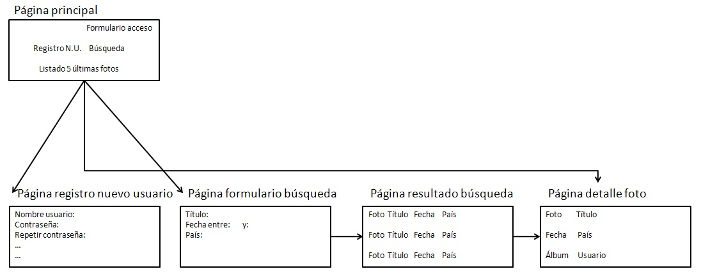

¿Qué tengo que hacer?
• Con esta práctica vamos a empezar el desarrollo de un sitio web de gestión de álbumes de fotos llamado "PI - Pictures & Images". Con cada práctica el sitio web crecerá tanto en número de páginas como en funcionalidad.
•El objetivo es crear un sistema gestor de álbumes de fotos que admita múltiples usuarios. Un usuario se tendrá que registrar para poder emplear el sistema. Una vez registrado podrá crear todos los álbumes que quiera y en cada álbum podrá publicar todas las fotos que quiera. Para visualizar las fotos no es necesario estar registrado: cualquiera puede ver los álbumes y sus fotos.
•En esta práctica tienes que crear un sitio web compuesto de cinco páginas web; en la Figura 1 se incluye un diagrama que resume las páginas que se tienen que crear y las relaciones que existen entre ellas:

Página principal
• Contiene enlaces a las distintas páginas que componen el sitio web, un formulario (nombre de usuario y contraseña) para acceder como usuario registrado y un listado con un resumen (foto, título, fecha, país) de las últimas cinco fotos que se han introducido.
Página con el formulario de registro como nuevo usuario
• Contiene un formulario con los datos necesarios para registrarse (nombre de usuario, contraseña, repetir contraseña, dirección de email, sexo, fecha de nacimiento, ciudad y país de residencia, foto).
Página con el formulario de búsqueda
• Contiene un formulario para realizar una búsqueda de fotos con los siguientes criterios: título, fecha y país.
Página con el listado resultado de una búsqueda
• Contiene un listado con un resumen (foto, título, fecha y país) de las fotos que cumplen los criterios de una búsqueda.
Página detalle foto
• Muestra toda la información sobre una foto seleccionada en la página anterior (foto, título, fecha, país, álbum de fotos y usuario al que pertenece).
Por ahora, estas páginas contienen datos estáticos que en prácticas posteriores se sustituirán por datos reales obtenidos de una base de datos. El modelo de datos se presentará en una próxima práctica.
Página con el listado resultado de una búsqueda
• Contiene un listado con un resumen (foto, título, fecha y país) de las fotos que cumplen los criterios de una búsqueda.
¿Cómo lo hago?
• Antes de ponerte a escribir el código HTML, realiza un diagrama de las páginas web que componen tu sitio web (esto lo deberías de haber hecho ya en la práctica anterior). Este diagrama puede tener tanto detalle como tú quieras, pero hay que encontrar un equilibrio entre utilidad y legibilidad: un diagrama muy simple y con poco contenido será poco útil, mientras que un diagrama muy complejo y con mucha información será difícil de entender y no supondrá una ayuda.
Crea una página web "esqueleto" a partir de la cual puedas crear todas las páginas de tu sitio web. En esta página incluye todos los elementos que se repitan en todas las páginas (cabecera y pie de página, barra de navegación). Asegúrate que el código de esta página web es correcto.
Recomendaciones
El objetivo de este curso es construir una aplicación web mediante el desarrollo de un prototipo que se irá refinando y ampliando en las diferentes prácticas. Antes de ponerte delante del ordenador a escribir páginas web puedes hacer (y es muy recomendable) un mockup (modelo a escala, maqueta) de cómo piensas que será el sitio web. Un mockup lo puedes hacer en papel, con una herramienta de diseño gráfico o con el mismo Microsoft PowerPoint.
El lenguaje HTML es muy sencillo de emplear: no es un lenguaje de programación, sino un lenguaje de marcado compuesto de etiquetas (o elementos) que pueden contener atributos que poseen un valor. Las etiquetas no se pueden escribir de cualquier forma, sino que existen una serie de reglas que definen un orden entre las etiquetas.
Si escribes mal el código HTML, normalmente la página web se visualizará más o menos bien en la mayoría de los navegadores porque están preparados para admitir errores, pero en algunos casos la presentación de la página puede variar enormemente de un navegador a otro. Por tanto, para asegurar que una página web se visualiza correctamente en la mayoría de los navegadores es imprescindible escribir un código correcto.
Cumplir los estándares cada vez tiene más importancia. El sitio W3C Sites recopila miles de sitios web que cumplen las recomendaciones del W3C. ¿Por qué son importantes los estándares? Algunas lecturas que te lo explican:
WaSP: Luchando por los estándares.
Diez razones para aprender y usar los estándares web.
Developing With Web Standards - Recommendations and best practices.
Para empezar a aprender XHTML, consulta algún curso de aprendizaje como los disponibles en W3Schools (XHTML Tutorial).
¿De dónde puedes copiar la estructura base de una página web y que sea correcta? Mira el código de la página del W3C y copia lo mínimo necesario para crear una página web correcta. Por ejemplo, a continuación te mostramos un ejemplo de esqueleto de página para XHTML 1.0 (puedes elegir otra variante válida de HTML, como HTML 4.01 o HTML5):

• Si quieres saber más sobre la estructura básica de una página web, consulta el artículo Plantilla base XHTML.
Una vez hayas aprendido los conceptos básicos, consulta la guía de referencia de W3Schools (XHTML Tag List) para conocer todas las etiquetas. Te vendrá muy bien recordar esta página web cuando estés escribiendo código XHTML y te surja una duda. Fíjate que para cada etiqueta se indica en que versión de XHTML está disponible (Strict, Transitional y Frameset).
En esta práctica sólo tienes que definir la estructura y contenido de las páginas web, el estilo lo definiremos posteriormente. Para ello emplea las etiquetas de XHTML que poseen contenido semántico, como , etc. Fíjate que la etiqueta no existe en la versión Strict, por lo que utilizando únicamente XHTML es imposible cambiar el tipo de letra o el color de un texto. No utilices tablas para maquetar una página web. Para todo ello emplearemos la tecnología CSS que utilizaremos en una próxima práctica.
Si quieres conocer más de XHTML, consulta la especificación oficial del W3C (XHTML 1.0 The Extensible HyperText Markup Language) y los DTD de las tres versiones (Strict, Transitional y Frameset). ¿Qué es un DTD? Es una especificación que define la estructura y los elementos que componen un documento.
Cuando escribas el código XHTML a mano, utiliza la herramienta W3C Markup Validation Service para comprobar que el código es correcto y la herramienta HTML Tidy para obtener una mejor apariencia visual del código fuente.
La herramienta de validación del W3C sólo permite validar las páginas web de una en una. Si necesitas validar todo un sitio web, la herramienta Multipage Validator permite validar múltiples páginas a partir de una única dirección.
Cuando se empieza a trabajar con una nueva tecnología es muy normal cometer muchos errores. ¿Cuales son los errores más comunes? El artículo Errores comunes del desarrollo web te lo explica.
Por último, ten cuidado con los nombres de los ficheros: utiliza únicamente letras del alfabeto inglés y números, no uses espacios en blanco y emplea únicamente minúsculas.